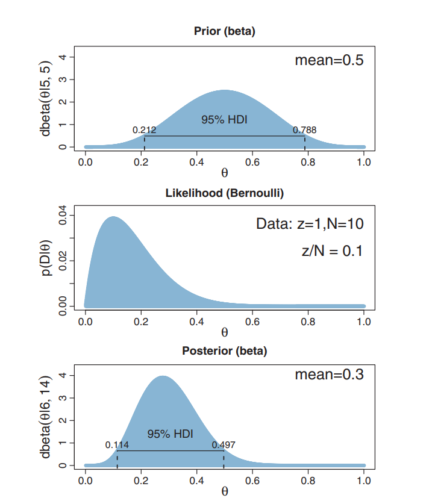
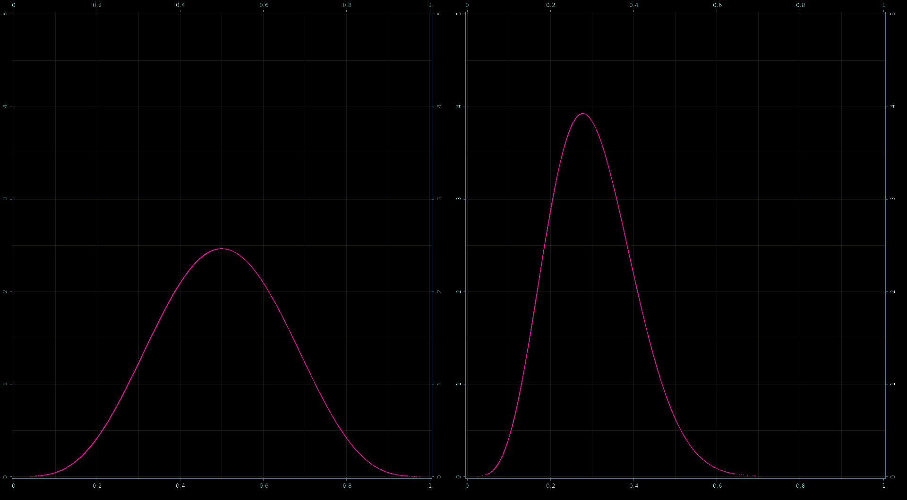
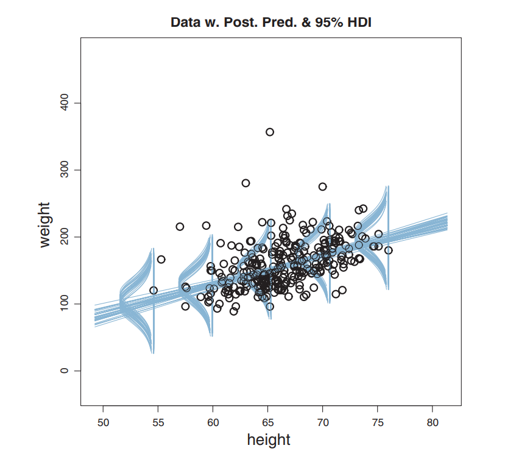
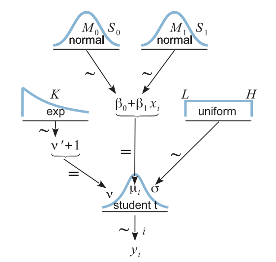
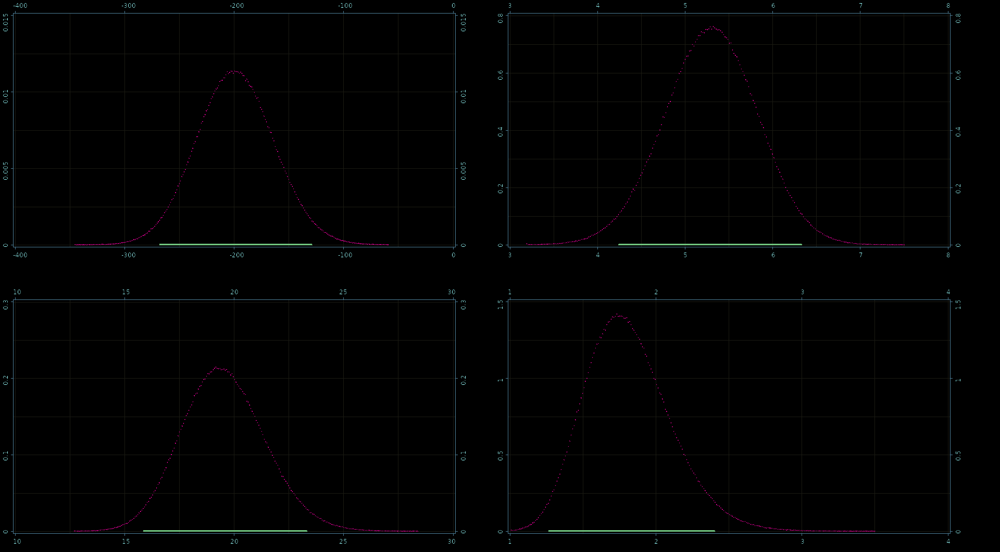

Bayadera: Bayes + Clojure + GPU
Dragan Djuric
dragandj@gmail.comDragan Djuric
- blog http://dragan.rocks
- twitter @draganrocks
- Professor of Software Engineering
- University of Belgrade
- Clojure as a primary language since 2009
- Interested in Bayesian methods in ML.
- dragandj@gmail.com
- github: blueberry / uncomplicate
- http://uncomplicate.org
A little background
- Clojure
- GPU computing
- Bayesian Data Analysis
Clojure - a modern lisp
- Dynamic and fast
- First-class functions
- Great abstractions and data structures
- Many useful libraries
- Even more experimental libraries
- Seamless access to Java and the JVM
- ClojureScript in browsers, node etc.
Are Java and Clojure good at number crunching?
- Good? maybe.
- Great? NO!
- JVM - no access to hardware-specific optimizations
- We can make it great!
CPU is not so great either!
- R, Python? Even worse than Java.
- C? complicated, verbose platform-specific optimizations.
- CPU? too beefed-up. Burns as the Sun!
GPU has a lot to offer …at a price
- many dumb computing units
- but, power-efficient for number crunching
- hardware support for massive parallelism
- faster and cheaper each year
- notoriously difficult to program
Uncomplicate
- Fluokitten
- fluorescent monadic fuzzy little things
- ClojureCL
- take control of the GPU and CPU from Clojure
- Neanderthal
- optimized vectors and matrices on CPU and GPU
- Bayadera
- high performance Bayesian statistics and data analysis on the GPU
What does all this has to do with Bayes stuff?
- BDA is conceptually simple
- Real models must be calculated numerically
- MCMC sampling and related methods
- In higher dimensions, requires huge samples
- Analyses typically runs in minutes, hours, weeks
.
- Good: Clojure and GPU FTW
- Challenge: MCMC is sequential
A Bayesian Data Analysis Primer
How to know something we cannot observe?
- All credible hypotheses and prior distribution
- Measure something it influences (get data)
- And calculate "backwards", using Bayes' rule
\begin{equation*}
\Pr(H|D) = \frac{\Pr(D|H)\times \Pr(H)}{\Pr(D)}
\end{equation*}
- No one true hypothesis wins
- posterior probability distribution
Doing Bayesian Data Analysis
- John Kruschke
- Excellent tutorial, even for beginners
- Real-world examples through the book!

Hello World: Fair or Trick coin?
- Coin bias, tendency to fall on head: θ
- We can not measure θ directly
- We can only know sample data (D)
- θ is general; θ1, θ2, …, θn are specific values
- D is general; 3 heads out of 10 specific
By Bayes' rule:
\begin{equation*}
\Pr(\theta|D) = \frac{\Pr(D|\theta)\times \Pr(\theta)}{\Pr(D)}
\end{equation*}
Analytical solution
Likelihood:
Pr(z,N|θ) = θz (1 - θ)N-z
(conjugate) prior
Pr(θ|a,b) = beta(θ|a,b) = θ(a-1)(1-θ)(b-1)/B(a,b)
Posterior, conveniently:
Pr(θ|z,N) = beta(θ|z+a, N - z + b)
Example from Kruschke's book

Easy computation
What is Pr(0.4<θ<0.6)?
(let [a-prior 5 b-prior 5 z 1 N 10 a-post (+ a-prior z) b-post (+ b-prior (- N z))] (- (beta-cdf a-post b-post 0.6) (beta-cdf a-post b-post 0.4)))
0.15985465263144316
Never happens in practice
- Only the simplest models are "nice"
- The curse of dimensionality
- We have to use numerical methods (MCMC)
Bayadera
- a Clojure library
- highly opinionated - Bayesian
- probabilistic
- need to NOT be super slow - thus GPU
- actually is the fastest I have seen
- use cases:
- Bayesian data analysis (more stats-oriented)
- a foundation for machine learning algorithms
- lots of statistical number crunching
- risk assessment, decision analysis, etc.
Bayadera Goals
- programmers are the first-class citizens
- not a "me too, just in Clojure"
- different and better (for what I want to do)
- for interactive and server use
HARD to compute
Usually:
\begin{equation*}
\Pr(\vec{h}|\vec{d}) = \frac{\prod_i f(\vec{d_i},\vec{h})\times g(\vec{h})}{\idotsint \prod_i f(\vec{d_i},\vec{h})\,d \vec{h}}
\end{equation*}
computationally:
\begin{equation*}
answer = \frac{hard\times acceptable}{impossible}
\end{equation*}
Markov Chain Monte Carlo (MCMC)
- a family of simulation algorithms
- draws samples from unknown probability distributions
- (enough) samples approximate the distribution
\begin{equation*}
\Pr(\vec{h}|\vec{d}) \propto \exp \left(\sum_i \log f(\vec{d_i},\vec{h}) + \log g(\vec{h})\right)
\end{equation*}
computationally:
\begin{equation*}
answer \propto zillions \times (hard\times acceptable)
\end{equation*}
The coin example through simulation
- MCMC not necessary in this case
- Good as a hello world example
- Comparison with analytical solution
Run the analysis on the GPU
(def result (atom (with-default-bayadera (let [a 5 b 5 z 1 N 10] (with-release [prior-dist (beta a b) prior-sampler (sampler prior-dist) prior-sample (dataset (sample! prior-sampler)) prior-pdf (pdf prior-dist prior-sample) post (posterior (posterior-model (:binomial likelihoods) (:beta distributions))) post-dist (post (sv (op (binomial-lik-params N z) (beta-params a b)))) post-sampler (time (doto (sampler post-dist) (mix!))) post-sample (dataset (sample! post-sampler)) post-pdf (scal! (/ 1.0 (evidence post-dist prior-sample)) (pdf post-dist post-sample))] {:prior {:sample (native (row (p/data prior-sample) 0)) :pdf (native prior-pdf)} :posterior {:sample (native (row (p/data post-sample) 0)) :pdf (native post-pdf)}})))))
Prior and posterior plots

Real-World: Robust Linear Regression

Hierarchical Model

Resulting Posterior

Read the data
(defn read-data [in-file] (loop [c 0 data (drop 1 (csv/read-csv in-file)) hw (transient [])] (if data (let [[_ h w] (first data)] (recur (inc c) (next data) (-> hw (conj! (double (read-string h))) (conj! (double (read-string w)))))) (op [c] (persistent! hw))))) (def params-300 (sv (read-data (slurp (io/file "ht-wt-data-300.csv")))))
Create a custom model
(def rlr-source (slurp (io/file "robust-linear-regression.h"))) (def rlr-prior (cl-distribution-model [(:gaussian source-library) (:uniform source-library) (:exponential source-library) (:t source-library) rlr-source] :name "rlr" :mcmc-logpdf "rlr_mcmc_logpdf" :params-size 7 :dimension 4)) (defn rlr-likelihood [n] (cl-likelihood-model rlr-source :name "rlr" :params-size n))
Model's likelihood function
REAL rlr_loglik(__constant const REAL* params, REAL* x) { const REAL nu = x[0]; const REAL b0 = x[1]; const REAL b1 = x[2]; const REAL sigma = x[3]; const uint n = (uint)params[0]; const bool valid = (0.0f < nu) && (0.0f < sigma); if (valid) { const REAL scale = t_log_scale(nu, sigma); REAL res = 0.0; for (uint i = 0; i < n; i = i+2) { res += t_log_unscaled(nu, b0 + b1 * params[i+1], sigma, params[i+2]) + scale; } return res; } return NAN; }
Model's prior function
REAL rlr_logpdf(__constant const REAL* params, REAL* x) { return exponential_log(params[0], x[0] - 1) + gaussian_log(params[1], params[2], x[1]) + gaussian_log(params[3], params[4], x[2]) + uniform_log(params[5], params[6], x[3]); }
Running the inference on the GPU
(def result (atom (with-default-bayadera (with-release [prior (distribution rlr-prior) prior-dist (prior (sv 10 -100 100 5 10 0.001 1000)) post (posterior "rlr_300" (rlr-likelihood (dim params-300)) prior-dist) post-dist (post params-300) post-sampler (sampler post-dist {:limits (sge 2 4 [1 10 -400 100 0 20 0.01 100])})] (mix! post-sampler {:step 384}) (histogram! post-sampler 1000)))))
Generate posterior diagrams
(defn var-plot [] (plot2d (qa/current-applet) {:width 900 :height 500})) (defn setup [] (q/background 0) (q/image (show (render-histogram (var-plot) @result 1)) 0 0) (q/image (show (render-histogram (var-plot) @result 2)) 950 0) (q/image (show (render-histogram (var-plot) @result 3)) 0 550) (q/image (show (render-histogram (var-plot) @result 0)) 950 550) (q/save "robust-linear-regression.png")) #_(q/defsketch diagrams :renderer :p2d :size :fullscreen :setup setup :middleware [pause-on-error])
Posteriors
β0, β1,σ, ν 
How fast is it?
- Bayadera
- 61,208,576 samples in 267 ms.
- 4.36 ns per (computationally heavy) sample
- very precise histogram
- JAGS/Stan (state-of-the-art bayesian C++ tools)
- 20,000 samples in 180/485 seconds
- 9 ms per sample
- rough histogram
- 2,000,000 × faster per sample
- more precise results, 1000 × faster
In real life
- 1 second vs a couple of hours
- 1 minute vs several days!
- 1 hour vs couple months/ a year
Thank You
The presentation can be reached through my blog:
Find more at: